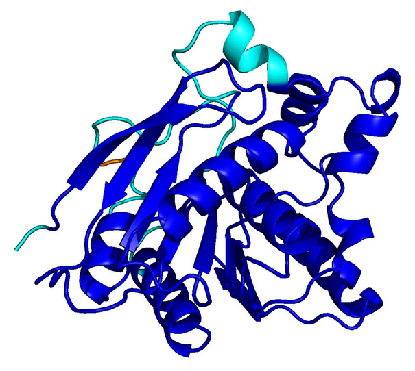
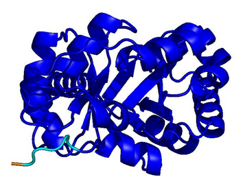
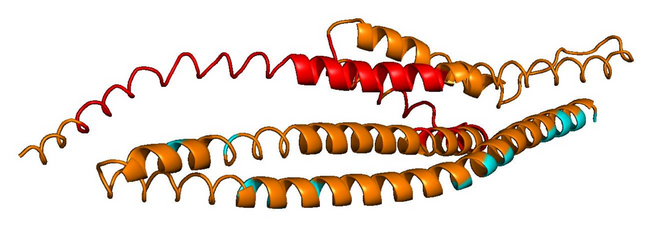
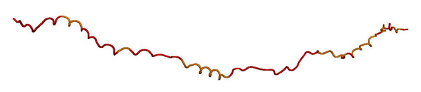

01
Motivation — Repetition Collapses the Fold
PLMs like ESM-3 and ProtGPT2 generate sequences that collapse into homopolymers or motif loops. Unlike text repetition, these destroy the predicted fold: AlphaFold pLDDT drops from 85+ to under 50 across repetitive regions.

CATH
natural · 256 aa
natural · 256 aa

UniRef50
natural · 256 aa
natural · 256 aa

ESM-3
homopolymer · 256 aa
homopolymer · 256 aa

ProtGPT2
motif loop · 128 aa
motif loop · 128 aa
Blue = pLDDT > 90 (confident); orange/red = < 70 (low). Repetitive residues fold poorly.